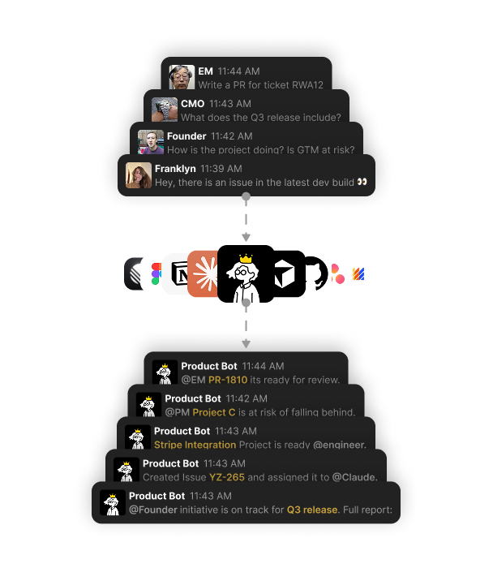

Executive Summary
Methodology
Methodology
Methodology
- Company: Trilitech
- Role: Product Lead
- The Challenge: In high-velocity engineering environments, engineers want to write code, not manage project management tools and write update reports. Because keeping up with tickets felt like a chore, our project board in Linear suffered from severe data degradation. Tickets were often just titles with no descriptions, sizes, priorities and unmapped dependencies. This made it impossible to see true progress, caused major scope creep, and forced us into long, painful meetings just to figure out what everyone was doing.
- The Strategy: Instead of forcing engineers to change, I connected Slack, Notion, and Linear together using simple automations, workflows and agents. "ProductBot" as I affectionately named it automated ticket creation and ran triage from Slack chats, turned PRDs into structured projects with descriptions, milestones, scopes and issues with timelines. It also let engineers use their favourite Agents directly within the workflow to create and review PRs.
Problem Statement
Productivity tracking tools are only as reliable as the data fed into them. When engineers view ticket management as an administrative chore, data quality quickly degrades, creating operational bottlenecks. The objective was to automate the pipeline from product scoping through to live sprint tracking, reporting and release. All while leveraging the team's existing conversational environments without imposing new tools, writing custom code, or requiring rigid behavioral changes from developers.
- The Scoping Bottleneck: Translating a product strategy document into a production-ready backlog traditionally required hours of manual ticket writing, epic structuring, and alignment syncs to map out execution phases.
- Degraded Board Hygiene: Sprint boards drifted from reality, frequently filled with low-context issues lacking descriptions, sizes, or explicit technical requirements. No one besides the individual engineer really knew what a task involved, how long it would take, or what its dependencies were.
- Context-Switching Drag: When boards lag behind production reality, stakeholders naturally resort to direct-messaging team leaders for status updates. A seemingly harmless, two-minute "Hey, where are we on this feature?" levies a heavy hidden tax: it breaks a developer's cognitive flow, forcing a context-switch that can cost upwards of twenty minutes of deep-work momentum to recover.
- Compounded Alignment Meetings: Because project tracking was incomplete, team meetings consistently overran allotted time to extract project status verbally, breaking engineering focus and introducing administrative overhead.
No-Code Orchestration
Instead of developing and maintaining proprietary middleware, the entire ecosystem was connected using native application features, built-in agents, and Slack's Workflow Builder. This approach eliminated technical debt and maintenance overhead while achieving seamless tool interoperability.
[ Notion: High-Context PRD ] ──> [ Linear Agent ]
│
▼
[ Automated Project Mapping ]
├── Structural Milestones & Stages
└── Pre-filled Technical Backlog
│
▼
[ Synchronous Review & Sign-off ]
│
┌───────────────────┴───────────────────┐
▼ ▼
[ Slack Context Harvesting ] [ Developer Work Environments ]
├── No-Code Workflow Listener ├── IDE Level: Cursor / Claude /...
└── Asynchronous Queries └── Conversational: Slack / ProductBot
Conversational Workflows
Conversational workflows were handled by 'ProductBot', a Slack native Workflow I created. When a user posts an issue or request in an authorised channel, the workflow intercepts the message and calls upon the specific Agent to complete the task be it creating a new ticket, updating an existing one or providing updates or key information.

The PRD-to-Project Pipeline
The pipeline relies strictly on an "accuracy in, accuracy out" principle. A PRD skill I prepared allowed myself and others across the product function to standardise and optimise Product Requirement Documents (PRDs) for Agents to interpret instead of wasting time manually doing this work over days or weeks:
- Ingestion and Reasoning: Once a highly scoped, comprehensive PRD was finalised, it was fed into Linear. The Agent parsed the functional requirements, UX flows, and technical criteria outlined in the text.
- Automated Blueprinting: The Agent automatically constructed the master project architecture within Linear, mapping out execution stages, milestones, and pre-filling technical task backlogs with complete contextual descriptions.
- Targeted Alignment Syncs: Rather than losing hours to manual ticket drafting, the product and engineering teams held brief, focused review sessions to audit the pre-populated backlog, adjust scope parameters if needed and directly sign off on execution.
Workplace Guidance
At the core of how this system worked was the implementation of strict Workplace Guidance (set of many skills) that governed how the Agent reasoned through tasks. This provided an explicit operational playbook, enforcing administrative consistency:
- Sizing & Estimation Rules for baseline effort allocation, ensuring the Agent sized tasks consistently according to team capacity definitions rather than guessing randomly.
- Context Routing & Assignment: A map of the company's internal team structure, instructing the Agent exactly which engineering sub-teams or individuals owned specific components or domains.
- Prioritisation: Established definitive logic to separate P0 through P4 tickets based on system severity, business impact, and blocking dependencies.
- Upstream Optimisation: Mandated precise, highly standardised ticket formatting schemas. By enforcing exact code-context blocks and expected behaviours within the ticket text, these tasks were optimised to be instantly parsed and executed by downstream coding agents (like Cursor) for seamless pull-request drafting.
- Deterministic Escalation: Defined strict boundaries for what the AI could handle autonomously versus what required immediate human intervention, including exact routing logic for who to tag (e.g., Tech Lead, Product Lead, or Director of Engineering) when an issue escalated.
Overcoming Adoption Scepticism
Initial developer sentiment towards ProductBot was met with passivity. To prevent friction I avoided a top-down mandate. Instead I encouraged people in my team to try it out and made it my own preferred way of working so they could see it work in practice. Once one developer tried it, he became a big advocate alongside me which accelerated the adoption and made product bot into an everyday workspace tool that made work easier and improved output.
Business Outcomes
- Reduction in Administrative Overhead: Automatically processing ticket creation, and labeling from conversational logs reduced the administrative burden on engineers, reclaiming valuable development hours.
- Hours Saved on Project Scoping Cycles: By letting Agents parse clear, well-structured Notion PRDs to generate complete milestone structures and pre-filled issues, the operational friction of backlog initialisation was eliminated. Project scoping shifted from a multi-hour manual task to a concise, high-leverage alignment and sign-off review.
- Ticket Standardisation: The introduction of strict workplace guidance eliminated inconsistent, title-only tasks. Agent generated issues contained clear descriptions and structural formatting optimised for downstream coding automation.
- Elimination of the "Question Tax": By turning Linear into an ironclad, real-time reflection of production reality more communication shifted to a passive, self-serve asynchronous model, preserving massive deep-work windows for the engineering team.
- Precise Tracking: Eliminating manual data-entry gaps ensured that the Linear board accurately reflected production states. Automated tracking gave stakeholders and executive teams real-time visibility into shipping timelines, eliminating frequent manual status check-ins.
Key Takeaways
- Guardrails Make the System: AI automation without structural guardrails results in fragmented data. The success of a workspace integration relies entirely on the clarity of the operational playbook provided to the Agent. High-quality input boundaries dictate high-quality data outputs.
- Automate the data trail, don't police the people: Developers don't hate project management; they hate the administrative tax that comes with it. By pulling data organically from the tools they already use (like Slack and GitHub), the Linear board stayed accurate without me having to constantly ping people for updates. This eliminated those painful 'quick status check' DMs that break developer flow.
- Orchestration Over Engineering: True product impact is about maximising leverage. Building complex, custom code wrappers introduces high maintenance overhead. Orchestrating native, platform-level APIs and existing no-code automation layers delivers the same high-impact business outcomes with near-zero technical debt.